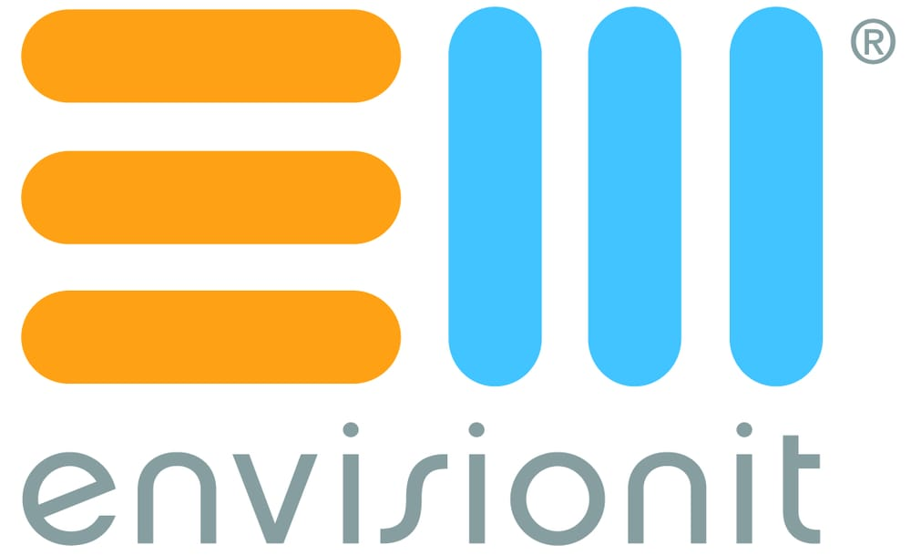

Where I've landed.
The CTO and I had worked together for five years at Maestro Health, so when he called and said he needed someone he trusted to assess what was happening inside the UX department at VelocityEHS, I knew what that meant. I spent my first year as a senior designer, quietly assessing and building trust, before being elevated to lead.
What followed was building the kind of design operation that runs well and keeps running. A UX Design Guide from the ground up. An Accelerate Design System designed in Figma and scaled across six Scrum teams with a great Front End engineering partner. And early AI integration using Figma AI and Lovable to get ideas into the room faster, in a form that looked and felt like the real product.
A former colleague raised his hand and said my name when a CTO asked who could own the full delivery model from wireframe to boardroom. I got a lunch meeting, and I got the job.
For five years I was the sole UX voice across 12 healthcare applications, designing from the ground up alongside Dev, Front End, Product, and industry consultants. The most satisfying work was building custom applications that replaced workflows people were still doing on paper.

At Rocket Web I came in to raise the quality bar on client deliverables, bridging the gap between business goals and actual user experience. Fast, varied work that reminded me why I got into this in the first place.
At 50,000feet I worked alongside the User Experience Director on Abbott Labs engagements while helping the agency sharpen its own process and launch a new site. Good work, good people.
Siteworx Chicago was the first remote office the company opened with a director at all four pillars: sales, development, engagement, and design. The four of us ran the whole operation together, not just our individual departments.
On the design side I led client engagements from discovery through handoff across demanding clients including Grant Thornton, American College of Surgeons, and DeVry University. The kind of environment where you find out quickly how much you know about running a business, not just a department.
LCG was a well-regarded agency and I came in to help keep it that way, focusing on how the creative department communicated internally and across the company. Clean process makes better work.
I oversaw the agency rebrand and new site launch, and represented LCG at IRWD 2011 as a Design and UX specialist, two days of one-on-one consultation with companies from across the industry. That kind of public-facing work sharpens you in ways internal projects rarely do.
Gorilla was named the 2010 Magento Partner of the Year and I was right in the middle of it. E-commerce design at that level is unforgiving: every decision connects back to business objectives, ROI goals, and whether the person actually buys the thing.
The work I'm most proud of was Axient.net, where I was creative lead on wireframes, full UX design, and development QA. It won an Interactive Media Council Award for Outstanding Achievement.

Envisionit was growing fast from eight employees toward a full-service shop of 25, and what they needed wasn't just a designer. They needed someone who could also build the structure around the work: routing, job tracking, process, communication between roles. I did both.
It was my first real experience building a creative department from scratch across print, interactive, and copy. Understanding how a creative department functions as an operation has informed how I've led every team since.
Senior designer and art director roles at Italia Partners gave me serious production discipline and early experience leading a small design team. Contract work through Z Design put me in front of clients from the Chicago Tribune to Foote Cone and Belding.
These were the foundational years: where the craft got sharp, the instincts got built, and the curiosity about what design can actually do for a business started to take shape.